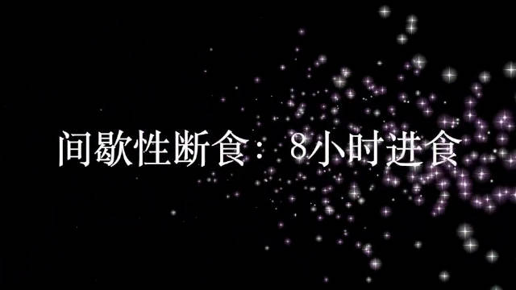

#创业#自己体会了下短视频的制作和发布全流程，短视频有周期长，成本高的问题，但如果用户用脚投票的话，只看视频，这些就不是问题。 花费时间大约如下： - 脚本：网上收集整理，编辑，约4个小时 - 绘图：如果是熟练的平面设计师，11张图要4-8小时 - 录音：1小时 - 视频编辑：8小时 - 发布：1小时
@老阿姨在抗衰:
#减脂#减脂都在强调少吃，研究发现，不需要节食，只需要改变吃饭的时间，一样能减脂。怎么做呢？
很简单，一天24小时，把三餐的时间控制在8小时之内，其它16小时只喝水就可以了。
#vlog# @微博VLOG 老阿姨在抗衰的微博视频
老阿姨在抗衰的微博视频
很简单，一天24小时，把三餐的时间控制在8小时之内，其它16小时只喝水就可以了。
#vlog# @微博VLOG

572次播放
03:20